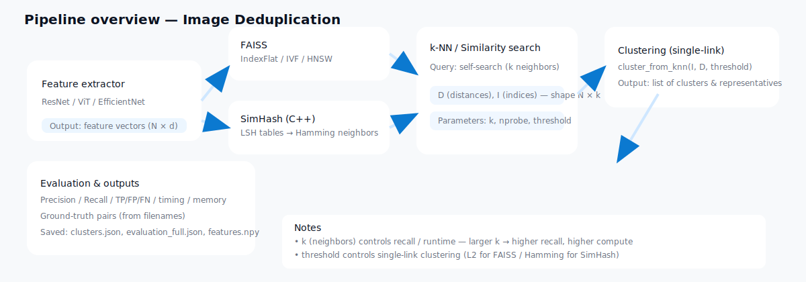

Image Deduplication with Deep Learning & LSH
Course Project — Data Structures & Algorithms
Ho Chi Minh City University of Technology (HCMUT)
Team: Lê Bảo Tấn Phong, Nguyễn Anh Quân, Phạm Văn Hên
🚀 Overview
This project implements a large-scale image deduplication system combining deep learning feature extraction with efficient similarity search algorithms (FAISS, SimHash C++, and MinHash).
🧠 Methods
- FAISS: Exact & approximate nearest neighbor search
- SimHash (C++): Locality-Sensitive Hashing
- MinHash: Jaccard similarity estimation
⚡ Quick Start
python run_pipeline.py --dataset demo_dataset
python run_pipeline.py --extractor resnet --method simhash --hamming-threshold 6
🛠️ Setup
pip install -r requirements.txt
cd src/lsh_cpp_module
python setup.py build_ext --inplace
📂 Structure
├── data/raw/ # Input images
├── data/processed/ # Results
├── src/
│ ├── feature_extraction/
│ ├── similarity_search/
│ └── lsh_cpp_module/ # C++ SimHash
├── run_pipeline.py
└── view_results.py
🎯 Findings
- ✅ FAISS offers best accuracy-speed tradeoff.
- ✅ SimHash scales best for large datasets.
- ⚠️ Multi-probing greatly improves recall.
📖 Citation
@misc{image-deduplication-2025,
title={Large-Scale Image Deduplication using Deep Learning and Locality-Sensitive Hashing},
author={Lê Bảo Tấn Phong and Nguyễn Anh Quân and Phạm Văn Hên},
institution={HCMUT},
year={2025},
note={Course Project: Data Structures & Algorithms}
}